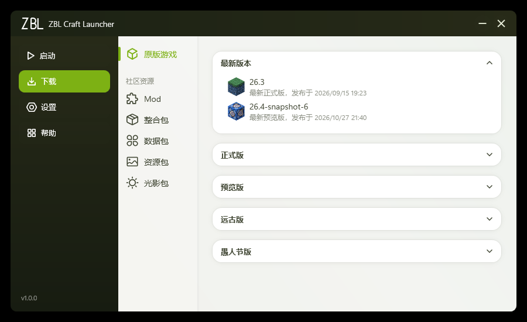
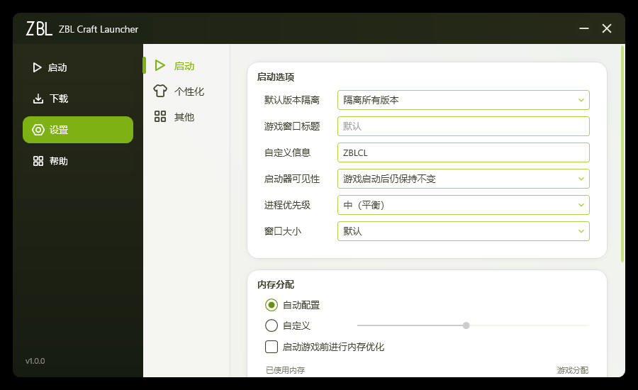
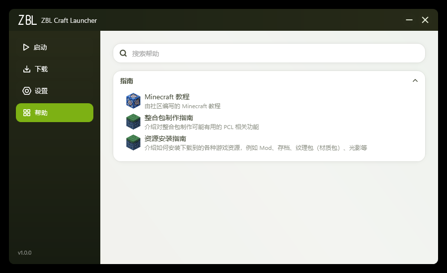

FEATURES
为流畅而生
不是换皮，是把骨架重做 —— 从布局到交互全部重来。
极致丝滑的界面
全局动画曲线精心调校，页面切换、卡片悬浮、按钮反馈一气呵成，没有任何生硬的跳变。
侧栏式全新布局
启动、下载、联机、设置、帮助五页收纳于深墨绿侧栏，选中态以主色胶囊高亮，层级一目了然。
全版本资源下载
内置 Minecraft 全版本列表与 Forge / NeoForge 等主流加载器，选好版本一键安装，无需东奔西走。
正版 / 离线双登录
支持正版账号与离线模式，启动页直观切换；进不进得了世界，一个按钮说了算。
细致入微的设置
内存分配、Java 路径、窗口尺寸、主题细节 —— 该有的都有，且每一项都放在你找得到的地方。
内置帮助中心
启动失败先看「启动日志」，再翻「帮助」指南 —— 常见问题分步拆解，新手也能自救。
SCREENSHOTS
所见即所得
全部页面均为实机截图，没有精修 — 长什么样，打开就是什么样。



立即下载 ZBL Craft Launcher
单文件 · 免安装 · 永久免费
1
下载
点击上方按钮，获取单文件 exe。
→
2
运行
双击直接运行，无需安装任何东西。
→
3
开玩
在「下载」页装好版本，回启动页开玩。
FAQ
常见问题
启动器是免费的吗？
是。ZBL Craft Launcher 完全免费，没有任何广告或内购。
需要安装吗？
不需要。下载得到的是单个 exe 文件，双击即可运行；Windows 10 / 11 自带所需的 .NET 运行时。
支持哪些 Minecraft 版本？
支持官方发布历史中的全部 Java 版本，并可直接安装 Forge、NeoForge 等主流模组加载器。
启动失败怎么办？
先在启动页点「启动日志」查看报错，再到「帮助」页翻对应指南；绝大多数问题都能按步骤自行解决。
可以离线游玩吗？
可以。启动页顶部可切换「正版 / 离线」模式，离线模式填入游戏用户名即可进入单人与局域网世界。